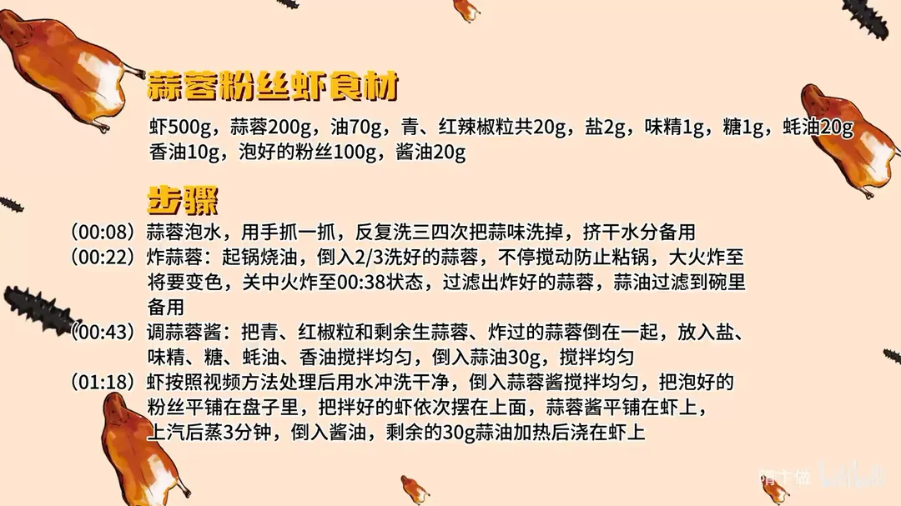

蒜蓉粉丝虾
隋卞一做。虾 500g 配蒜蓉 200g，蒜蓉分两拨：2/3 炸香、1/3 留生，拌成蒜蓉酱。粉丝垫底、虾摆面，上汽后只蒸 3 分钟，最后淋酱油、浇 30g 热蒜油。
原视频：https://www.bilibili.com/video/BV1N2421f77r
食材
虾、蒜蓉 等 11 样
| 类别 | 用料 | 用量 |
|---|---|---|
| 主料 | 虾 | 500g |
| 主料 | 蒜蓉 | 200g |
| 主料 | 泡好的粉丝 | 100g |
| 辅料 | 青、红辣椒粒 | 共 20g |
| 用油 | 油 | 70g |
| 调料 | 盐 | 2g |
| 调料 | 味精 | 1g |
| 调料 | 糖 | 1g |
| 调料 | 蚝油 | 20g |
| 调料 | 香油 | 10g |
| 调料 | 酱油 | 20g |
步骤
- 洗蒜：蒜蓉泡水，用手抓一抓，反复洗三四次把蒜味洗掉，挤干水分备用。
- 炸蒜蓉：起锅烧 70g 油，倒入 2/3 洗好的蒜蓉，不停搅动防止粘锅，大火炸至将要变色时转小火，炸至金黄，过滤出炸好的蒜蓉，蒜油过滤到碗里备用。
- 调蒜蓉酱：把青、红辣椒粒和剩余的生蒜蓉、炸过的蒜蓉倒在一起，放入盐、味精、糖、蚝油、香油搅拌均匀，倒入 30g 蒜油，搅拌均匀。
- 蒸虾：虾按照视频方法处理后用水冲洗干净，倒入蒜蓉酱搅拌均匀；把泡好的粉丝平铺在盘子里，拌好的虾依次摆放在上面，蒜蓉酱平铺在虾上，上汽后蒸 3 分钟，倒入酱油，剩余的 30g 蒜油加热后浇在虾上。
讲解要点
难度：★★☆☆☆（蒜蓉酱不难，难在炸蒜的火候和 3 分钟的蒸制时间）
为什么这么做
- 蒜蓉泡水、反复洗三四次：洗掉蒜的辛辣和苦涩，炸完才不苦、只剩香，洗完炸过的蒜酥得像面包糠。
- 三分之二炸、三分之一留生：熟蒜是炝锅的香，生蒜是冲的鲜辣，两者合起来才有层次感。
- 炸蒜要勤搅、快变色就转中火：蒜末颗粒小，最容易糊，颜色一变深就苦。
- 必须放蒜油：在家做总觉得蒜味不浓，就是少了这勺蒜油——蒜油是香味的载体。
- 虾开背片开：一是好看，二是入味快，吃起来也省得剥壳。
- 粉丝垫底、蒜蓉铺在虾上：蒸的时候汁水往下流，粉丝把虾和蒜的味道吸得饱。
- 上汽后只蒸 3 分钟、酱油只淋一点：虾一老就柴，3 分钟刚好脆弹；酱油多了会把虾香和蒜香全盖掉。
容易翻车
- 蒜蓉没洗净就下锅炸，成品发苦。
- 炸蒜火大，几十秒就糊，只能倒掉重来。
- 蒸过头，虾变柴、粉丝烂成糊。
- 粉丝没泡透，蒸 3 分钟芯还是硬的。
- 酱油淋多，整盘死咸、盖住虾味。
原片尾卡

原片文案
AI 字幕校准稿
你们最爱的家常菜系列又来了——蒜蓉粉丝虾。先做蒜蓉酱：大蒜弄碎，泡水，反复洗个三四次，把那蒜味洗掉，蒜味没有那么重就可以了。
泡完水的蒜挤干，锅里边烧油，切好的蒜末咱们倒入 2/3，留 1/3。勤和弄着点，别让它粘锅。炸到快变色的时候调到中火，慢慢地把那个蒜的香味全部都炸出来。炸蒜的油直接过滤到碗里边。洗过的蒜炸完以后类似于跟面包糠差不多。
准备点青红椒粒，把生蒜、熟蒜全倒在一起。蒜蓉酱是一半生的、一半熟的：生的味儿太冲、太鲜，熟的所谓就是咱们那种炝锅的味道，结合到一起就会更好吃，有层次感。加点盐、味精、糖，加蚝油，来点香油，把调料搅拌均匀，然后把炸过蒜的蒜油倒进去。
你们在家做这个菜的时候老感觉蒜味不浓、还不够香，什么原因呢？就是没放蒜油。
下面处理虾，虾有两种片法，取决于你买的虾多少。第一种，虾买得多，把上面那个虾枪去掉，中间片开，一会儿往盘子里一平铺很漂亮。第二种，虾头去掉，中间片开，尾部直接片开，就不连着了，这样往盘子里一铺更占地、更显多。你这么说，你家里有五个虾够吃一盘了，这是经营小妙招。
这么片，蒸出来以后一是好看，二呢特别便于入味，而且吃起来方便，也省得再剥了。把片完的虾洗一下，洗干净之后控一下水，把蒜蓉酱倒进去，拌均匀之后就可以装盘。
咱们把这粉丝先垫在下边，然后把虾放上面，一个挨一个，把蒜蓉都铺到这个虾上面——在蒸的时候，汁水就流到虾上面去了，起到一个入味的作用。上汽 3 分钟就行。完了这边倒点酱油，刚才咱们剩下来的蒜油加热一下浇在上面，瞬间香味爆棚。
差不多是我这辈子吃过最融合的蒜蓉粉丝虾。夸张了。没有，就是那种虾是虾、粉丝是粉丝的味道、蒜是蒜的味道，它所有味道都是融合在一起的，但是口感却又不一样：粉丝的筋道，虾的脆弹，然后还有两种口感的蒜，真的好香。
粉丝也把那个虾和蒜的味道吸得特别特别的饱满，但是同时还能吃到那个虾的甜。包括我们淋的这一点点酱油也是要注意量的，过多就会把虾的那种香味、蒜的味全部都盖掉。一点点，在咱们蒸完的虾的汁还有蒜油的作用下，还吃得很复合。